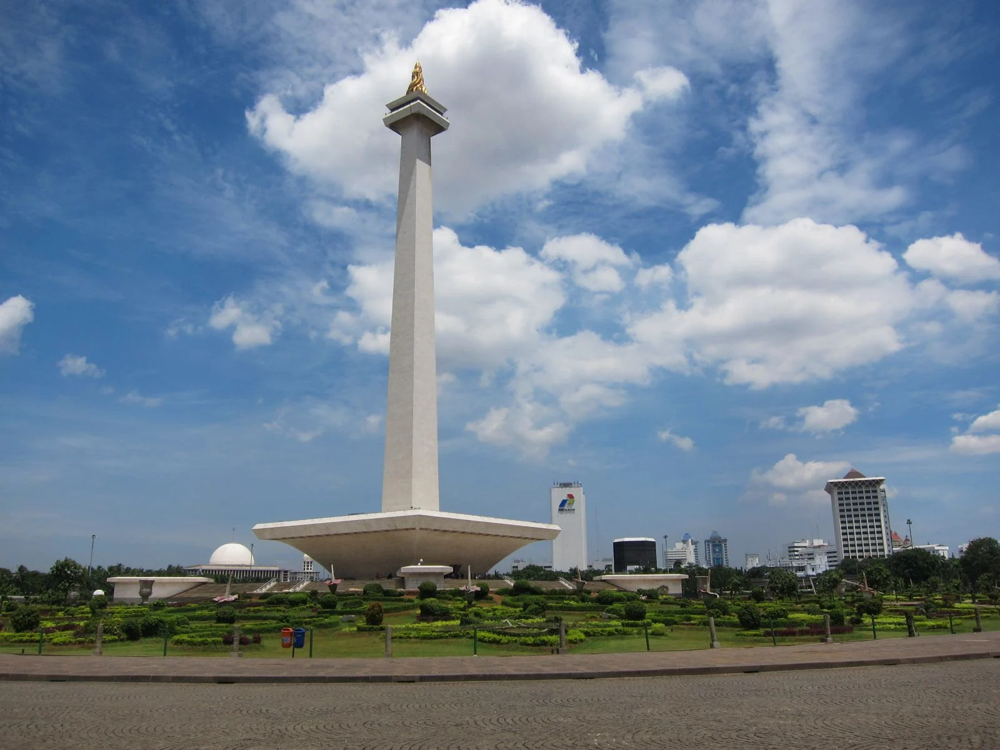
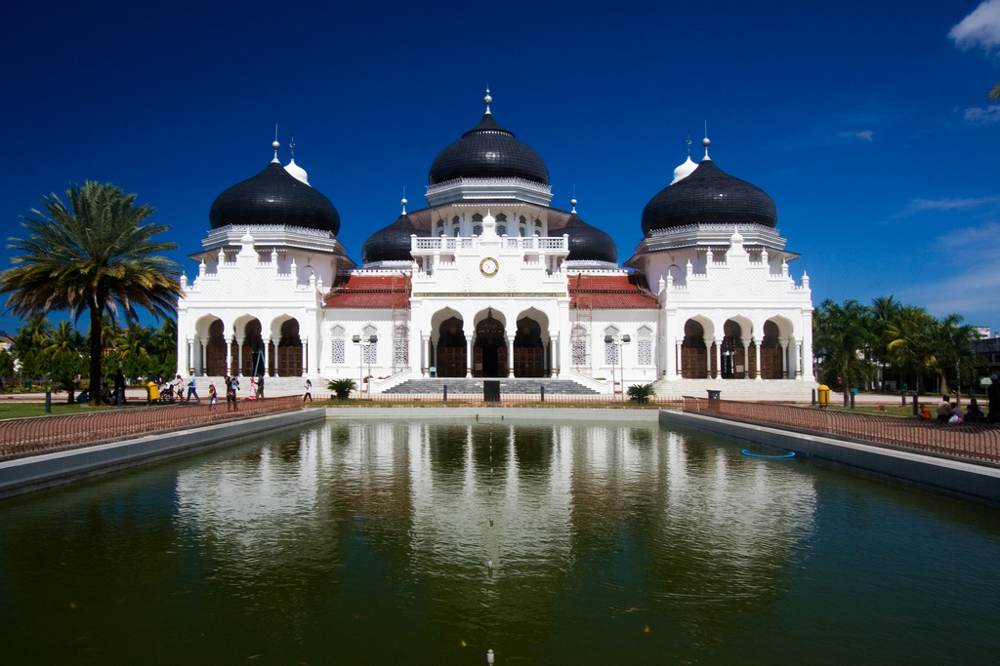
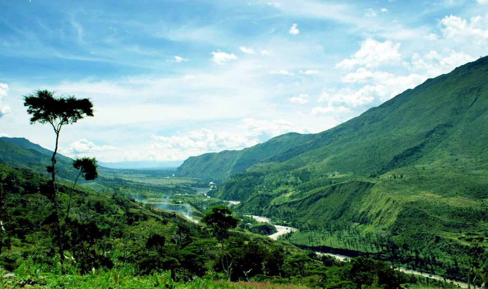

Yogyakarta merupakan salah satu provinsi di Indonesia yang bersifat kesultanan. Yogyakarta menjadi daerah istimewa Indonesia karena sultan Yogyakarta yaitu Sri Sultan Hamengkubuwono IX telah banyak membantu pembentukan NKRI. Seperti pada tahun 1942 gimana Jakarta sedang dalam kondisi genting Sultan Hamengkubuwono menawarkan penggunaan Yogyakarta sebagai ibukota sementara.
2.Jakarta

Jakarta merupakan provinsi di Indonesia dan merupakan ibukota negara sebelum akan dipindahkan ke Kalimantan.Jakarta menjadi daerah istimewa selain karena ibukota Jakarta juga menjadi tempat dibacakannya proklamasi Indonesia dan tempat tinggal wali negara asing.
3.Aceh

Aceh merupakan provinsi Indonesia yang seperti Yogyakarta Aceh juga bersifat kesultanan. Aceh menjadi daerah istimewa karena semangat perjuangan masyarakat Aceh yang memiliki ketahanan dan daya juang tiggi, bersumber syariat Islam yang kuat. Oleh sebab itu Aceh menjadi salah satu daerah modal perjuangan dalam merebut kemerdekaan NKRI.
4.Papua

Papua merupakan provinsi Indonesia yang sangat subur dan kaya sumber daya alam karena sebagian Papua tak berpenghuni. Papua menjadi daerah istimewa supaya dapat memperdaya dan mengembangkan seluruh rakyat Papua. Sehingga dengan diberikannya hak khusus diharapkan pembangunan Papua dapat dilakukan sehingga meningkatkan kesejahteraan rakyat dan negara.